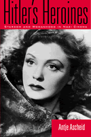

<body bgcolor="#FFFFFF" text="#000000" link="#0000FF" vlink="#CC0000" alink="#CC0000"><center><hr width="350" size="1" align="center" noshade>The brightest stars in fascist films<hr width="350" size="1" align="center" noshade><p><a href="https://cdcshoppingcart.uchicago.edu/Cart/ChicagoBook.aspx?ISBN=9781566399838&&PRESS=temple" target="_top">Buy this book!</a> | <a href="https://cdcshoppingcart.uchicago.edu/Cart/Cart.aspx?PRESS=temple" target="_top">View Cart</a> | <a href="https://cdcshoppingcart.uchicago.edu/Cart/Cart.aspx?PRESS=temple" target="_top">Check Out</a></p><p></p></center><!--none//--><h1>Hitler's Heroines</h1>
<H2>Stardom and Womanhood in Nazi Cinema</H2>
<h3>Antje Ascheid</h3>
<P>cloth 1-56639-983-1 $75.50, Jan 03, <FONT COLOR=#990033>Out of Stock Unavailable</FONT>
<br>paper 1-56639-984-X $28.95, Jan 03, <FONT COLOR=#990033>Available</FONT>
<br>Electronic Book 1-59213843-8 $28.95 <FONT COLOR=#990033>Out of Stock Unavailable</FONT>
<BR> 288 pp
6x9
37&nbsp;halftones
</P><BLOCKQUOTE><I>"</I>Hitler's Heroines<I> is the first in-depth study of the complex role of female stars in Nazi cinema. Ascheid's detailed analysis of three of the most celebrated stars&#151Kristina S�derbaum, Zarah Leander, and Lilian Harvey&#151shows the crucial role female stars played within Joseph Goebbels's entertainment industry. Ascheid highlights womanhood as a central area of contestation within German fascism and her work is informed by a wealth of recent critical studies on the history and cinema of the Third Reich."</I>
<br>&#151<b>Gerd Gem�nden</b>, Professor of German and Comparative Literature, Dartmouth College<I></I></BLOCKQUOTE>
<p>German film-goers flocked to see musicals and melodramas during the Nazi era. Although the Nazis seemed to require that every aspect of ordinary life advance the fascist project, even the most popular films depicted characters and desires that deviated from the politically correct ideal. Probing into the contradictory images of womanhood that surfaced in these films, Antje Ascheid shows how Nazi heroines negotiated the gender conflicts that confronted contemporary women.
<p>The careers of Kristina Soderbaum, Lilian Harvey, and Zarah Leander speak to the Nazis' need to address and contain the "woman question," to redirect female subjectivity and desires to self sacrifice for the common good (i.e., national socialism). Hollywood's new women and glamorous dames were out; the German wife and mother were in. The roles and star personas assigned to these actresses, though intended to entertain the public in a politically conformist way, point to the difficulty of yoking popular culture to ideology.
<BR>&nbsp;<h2>Excerpt</h2><P>Excerpt available at <a href="http://www.temple.edu/tempress">www.temple.edu/tempress</a></p>
<BR>&nbsp;<h2>Reviews</h2>
<p><I>"</I>Hitler's Heroines<I> undermines the notion of the Nazi state's total control of public attitudes. It reveals the slippages in the discourses on gender, sexuality and nation that occurred through the film industry's construction of female stardom. In the process, the book breaks new ground in the increasingly well-cultivated terrain of Nazi cinema studies."</I>
<br>&#151<b>Robert R. Shandley</b>, Associate Professor of Film Studies and German, Texas A&M University, and author of <I><a href="1593_reg.html" target="_top">Rubble Films: German Cinema in the Shadow of the Third Reich</a></I> (Temple)
<p><i>"[A] useful and stimulating study...Ascheid's book, well-researched, tightly structured, and&#151for the most part&#151well written, is a highly welcome addition to the growing body of sophisticated studies of the cinema of the Third Reich."</i>
<br>&#151<b><i>German Studies Review</i></b>
<p><i>"[T]he author's overarching thesis&#151that images of womanhood in Nazi cinema are ambiguous and highlight a fundamental dilemma of National Socialism between the need to promote political correctness and appeal to consumers&#151is worth considering and will hopefully draw historians' attention to an important subject about which we know very little."</i>
<br>&#151<b><a href="http://www.h-net.org/reviews/showrev.cgi?path=123091066352553" target="new">H-Net</a></b>
<p><i>"[A] valuable contribution to both Third Reich Film Studies and Women's Studies. Well-researched, informed by theoretical and methodological developments in Film Studies and German Studies, and lucidly written, this volume enriches current understandings both of the Nazi film industry and of the tensions between party ideology and the media's images of women in the Third Reich."</i>
<br>&#151<b><i>Monatshefte</i></b>
<p><i>"The author shows Nazi cinema's adaptation of Hollywood's popular cultural forms for its own propagandistic purposes. In Ascheid's analysis, they emerge as complicated figures who reveal both the influence of fascist doctrine and, at the same time, the desires and conflicts of real German women in the thirties and forties....the book is quite convincing in showing how [Kristina] S�derbaum could reveal the tragic components of womanhood particularly in Harlan's state-ordered propagandistic melodramas."</i>
<br>&#151<b><i>Colloquia Germanica</i></b>
<BR>&nbsp;<h2>Contents</h2><P>
<p>Preface
<br>Introduction
<br>1. Nazi Culture? National Socialism, Stardom, and Female Representation
<br>2. Kristina S�derbaum: The Myth of Naturalness, Sacrifice, and the "Reich's Water Corpse"
<br>3. Lilian Harvey: International Stardom, German Comedy, and the "Dream Couple"
<br>4. Diva, Mother, Martyr: The Many Faces of Zarah Leander
<br>5. Conclusion
<br>Notes
<br>Bibliography
<br>Index
</P><BR>&nbsp;<H2>About the Author(s)</H2>
<table><tr><td valign="top"><img src="/tempress/authors/1604_au.gif" height="90" width="75"></td><td width="100%" valign="middle"><p><b>Antje Ascheid</b> is Assistant Professor in the Department of Drama and Theater at the University of Georgia.</P></td></tr></table>
<BR><H2>Subject Categories</H2>
<p><A HREF="/tempress/cinema.html" TARGET="_top">Cinema Studies</a>
<BR><A HREF="/tempress/cultural.html" TARGET="_top">Cultural Studies</a>
<BR><A HREF="/tempress/women.html" TARGET="_top">Women's Studies</a>
</p>
<BR><h2 class="inpageheading">In the series</H2>
<P><I><a href="http://www.temple.edu/tempress/culture.html" onMouseOver="window.status='Click for other books in this series!'; return true;" onMouseOut="window.status=''; return true;" target="_top">Culture and the Moving Image</a></i>, edited by Robert Sklar.
</p><p>The <I>Culture and the Moving Image</I> series, edited by Robert Sklar, seeks to publish innovative scholarship and criticism on cinema, television, and the culture of the moving image. The series will emphasize works that view these media in their broad cultural and social frameworks. Its themes will include a global perspective on the world-wide production of images; the links between film, television, and video art; a concern with issues of race, class, and gender; and an engagement with the growing convergence of history and theory in moving image studies.</p>
<p align="center"><a href="https://cdcshoppingcart.uchicago.edu/Cart/ChicagoBook.aspx?ISBN=9781566399838&&PRESS=temple" target="_top">Buy this book!</a> | <a href="https://cdcshoppingcart.uchicago.edu/Cart/Cart.aspx?PRESS=temple" target="_top">View Cart</a> | <a href="https://cdcshoppingcart.uchicago.edu/Cart/Cart.aspx?PRESS=temple" target="_top">Check Out</a></p><p><font face="Arial" size="1"><a href="copyright.html" onMouseOver="window.status='Web Copyright Policy';return true;" onMouseOut="window.status=''" title="Web Copyright Policy">&copy;</a> 2015 <a href="http://www.temple.edu" target="new" onMouseOver="window.status='Link to Temple University home page';return true;" onMouseOut="window.status=''" title="Link to Temple University home page">Temple University</a>. All Rights Reserved. http://www.temple.edu/tempress/titles/1604_reg.html</font></p>